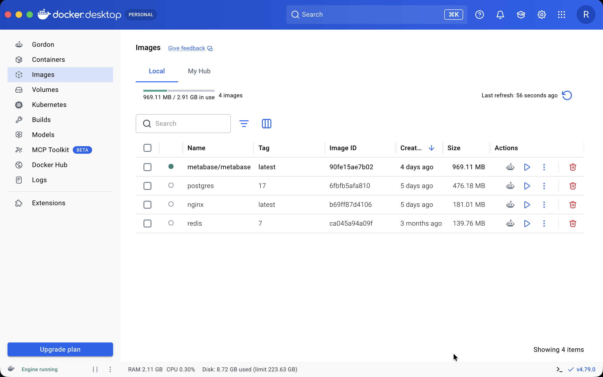
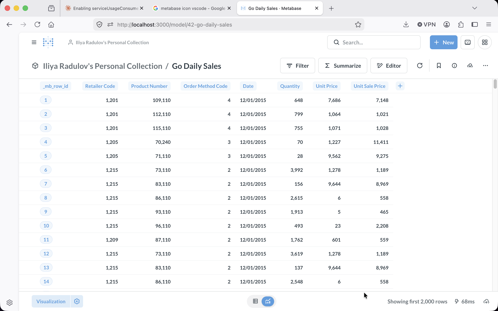
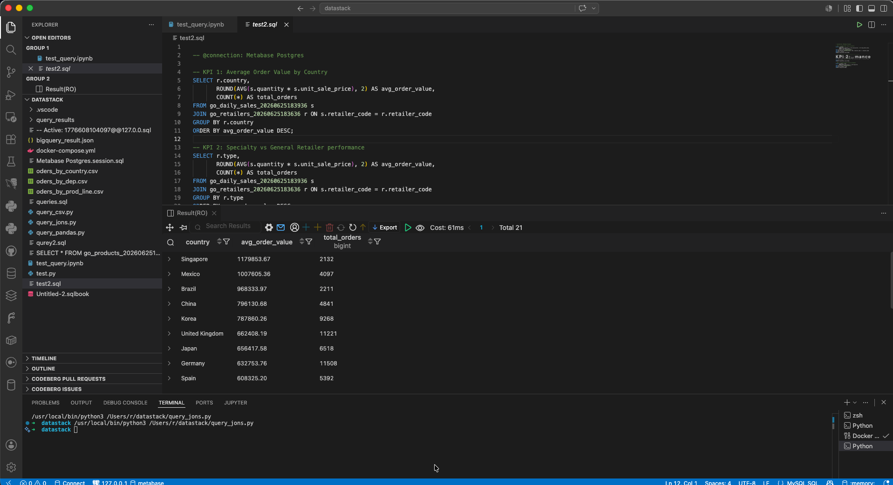
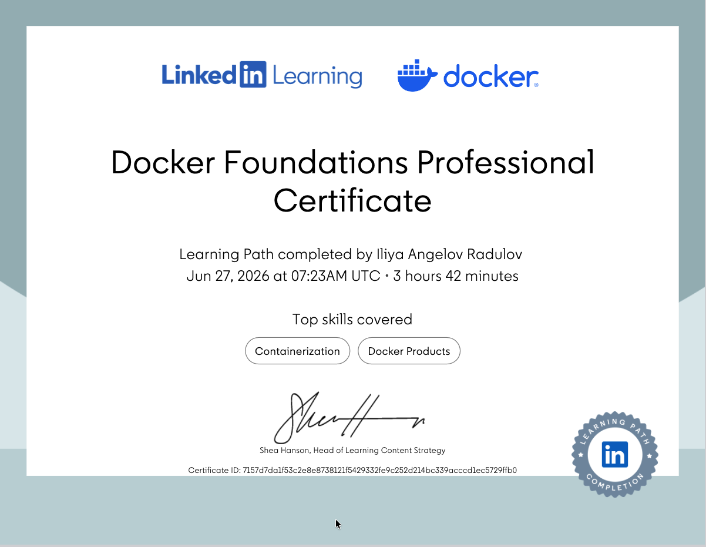

Replaced Google's cloud ecosystem with a fully self-hosted analytics pipeline — Docker, Postgres, Metabase, and VS Code — running entirely on local infrastructure.
The GoExplore project originally relied on Google Sheets, BigQuery, and Looker Studio — all US-hosted cloud services. For a European team processing retail sales data, this creates GDPR exposure: data leaves the EU, vendor lock-in is real, and costs scale unpredictably.
The goal was to rebuild the same analytical capability — data storage, SQL querying, and KPI dashboards — using only open source tools running locally, with zero dependency on any external cloud provider.
| Google Tool | Open Source Replacement | Hosting |
|---|---|---|
| Google Sheets | PostgreSQL 18 + CSV upload | Local Mac |
| BigQuery | PostgreSQL 18 (Postgres.app) | Local Mac |
| Looker Studio | Metabase Community Edition | Docker |
| Cloud SQL editor | VS Code + SQLTools | Local |
Before building anything, the local Docker environment was in a messy state — a legacy Apache Superset stack left over from a previous attempt, plus several orphaned containers holding onto ports. Getting to a clean slate was the first real engineering challenge.
The first nginx container launch failed immediately on port 8080. The second attempt on port 8081 failed too. Both ports were held by stopped (but not removed) containers — a common Docker pitfall.
# Error on port 8080
docker run --name website -p 8080:80 nginx
→ Bind for 0.0.0.0:8080 failed: port is already allocated
# Error on port 8081 too
docker run --name website -p 8081:80 nginx
→ Bind for 0.0.0.0:8081 failed: port is already allocated
# Diagnosis: find what owns the port
lsof -i :8080
docker ps -a # stopped containers still hold portsA full Apache Superset installation was discovered: 11 containers (running and stopped), ~8GB of images across 14 image layers, and 11 named volumes. The decision was to remove everything and start clean.
Including superset, worker, worker-beat, websocket, init, node, nginx, redis, postgres
superset (1.48GB ×4), superset-node (697MB), apache/superset (785MB), latest-dev (1.32GB)
superset_db_home, superset_redis, superset_superset_data, superset_home + 7 anonymous volumes
# Stop and remove all containers
docker rm -f $(docker ps -aq)
# Remove Superset images
docker rmi apache/superset:latest \
superset-superset:latest \
superset-superset-worker:latest \
superset-superset-init:latest \
superset-superset-node:latest \
superset-superset-websocket:latest
# Remove all Superset volumes
docker volume rm superset_db_home superset_redis \
superset_superset_data superset_superset_home
# Final clean state: only nginx, postgres:17, redis:7 remain
docker imagesWith a clean environment, Metabase was deployed as a single container pointed at the native Postgres 18 instance. The critical networking detail: Docker containers on Mac cannot reach localhost — they must use host.docker.internal instead.
# docker-compose.yml
services:
metabase:
image: metabase/metabase:latest
container_name: metabase
ports:
- "3000:3000"
environment:
MB_DB_TYPE: postgres
MB_DB_DBNAME: metabase
MB_DB_PORT: 5432
MB_DB_USER: postgres
MB_DB_PASS: postgres123
MB_DB_HOST: host.docker.internal # Mac bridge — not localhost!
restart: unless-stopped# Create the Metabase app database first
psql -h localhost -U postgres -c "CREATE DATABASE metabase;"
# Launch
docker compose up -d
# Watch for "Metabase Initialization COMPLETE"
docker logs -f metabasehttp://localhost:3000 immediately after.
The GoExplore dataset consists of four CSV files covering retail sales activity across 21 countries. Rather than uploading to a cloud warehouse, all files were loaded directly into a local Postgres 18 instance via Metabase's built-in CSV upload — no ETL pipeline required.
Removed a legacy Apache Superset stack (~8GB of images) and 11 orphaned containers, leaving only nginx, postgres:17, and redis as base images.
Single docker-compose.yml with Metabase pointing at the native Postgres 18 instance via host.docker.internal — the Docker bridge to the Mac's localhost.

Four CSV files uploaded via Metabase's UI. Each becomes a Postgres table automatically — no schema definition needed.

SQLTools + PostgreSQL driver installed. Connected directly to the metabase database where the go_ tables live.

-- Four tables created from CSV upload
SELECT table_name, COUNT(*) AS rows
FROM information_schema.tables t
JOIN (
SELECT table_name, COUNT(*) FROM go_daily_sales_20260625183936 UNION ALL
SELECT table_name, COUNT(*) FROM go_products_20260625183647 UNION ALL
SELECT table_name, COUNT(*) FROM go_retailers_20260625183636 UNION ALL
SELECT table_name, COUNT(*) FROM go_methods_20260625184054
) counts ON t.table_name = counts.table_name
WHERE t.table_name LIKE 'go_%';The four tables join on three keys:
go_daily_sales → go_products (via product_number)
go_daily_sales → go_retailers (via retailer_code)
go_daily_sales → go_methods (via order_method_code)Three KPIs were selected to answer the two business questions: new market potential (European expansion) and channel performance (specialty vs. general retailers).
Baseline metric for the expansion project. Shows which existing markets generate the most revenue per order — a benchmark for the 4 new target countries.
Directly answers the Head of Retailer Connections' question. Compares AOV and order volume across all 7 store types.
Explains why AOV differs across channels. Golf Equipment leads — specialty stores carry premium products, which drives their higher order values.
All three KPIs are powered by SQL queries written in VS Code and executed directly in Metabase. No ORM, no abstraction layer — plain SQL against Postgres.
SELECT
r.country,
ROUND(AVG(s.quantity * s.unit_sale_price), 2) AS avg_order_value,
COUNT(*) AS total_orders
FROM go_daily_sales_20260625183936 s
JOIN go_retailers_20260625183636 r
ON s.retailer_code = r.retailer_code
GROUP BY r.country
ORDER BY avg_order_value DESC;SELECT
r.type,
ROUND(AVG(s.quantity * s.unit_sale_price), 2) AS avg_order_value,
COUNT(*) AS total_orders
FROM go_daily_sales_20260625183936 s
JOIN go_retailers_20260625183636 r
ON s.retailer_code = r.retailer_code
GROUP BY r.type
ORDER BY avg_order_value DESC;SELECT
p.product__line,
ROUND(AVG(p.unit_price), 2) AS avg_price
FROM go_products_20260625183647 p
GROUP BY p.product__line
ORDER BY avg_price DESC;Following the two-world approach from the team guide, VS Code became the single development environment for querying both the local Postgres stack and the shared Google BigQuery project. Four distinct query methods were explored — each with different trade-offs for speed, reproducibility, and output format.
Plain SQL file connected to local Postgres 18 via SQLTools + PostgreSQL driver. The most direct approach — write SQL, press Cmd+Enter, see results instantly in the results panel below.
Cell-based SQL notebook format inside VS Code. Each query runs in its own block with results displayed inline — similar to Jupyter but pure SQL. Good for structured, step-by-step analysis.
Python scripts using google-cloud-bigquery to query the shared team dataset. Results exported to .csv or .json files programmatically — useful for reproducible data exports.
Jupyter notebook with Python + BigQuery client. SQL runs inside bq() helper function, results render as pandas DataFrames. Best for exploratory analysis and sharing with teammates.
-- test2.sql — runs directly against local Postgres 18
-- @connection: Metabase Postgres
-- KPI 1: Average Order Value by Country
SELECT r.country,
ROUND(AVG(s.quantity * s.unit_sale_price), 2) AS avg_order_value,
COUNT(*) AS total_orders
FROM go_daily_sales_20260625183936 s
JOIN go_retailers_20260625183636 r ON s.retailer_code = r.retailer_code
GROUP BY r.country
ORDER BY avg_order_value DESC;
-- Result: Singapore 1,179,853 | Mexico 1,007,605 | Brazil 968,333# query_csv.py — queries BigQuery, saves result to CSV
from google.cloud import bigquery
import csv
client = bigquery.Client(project='mystical-proj-500509')
query = """
SELECT Country, COUNT(*) AS stores
FROM go_explore_project.retailers
GROUP BY Country
ORDER BY stores DESC
LIMIT 5
"""
rows = client.query(query).result()
with open('bigquery_result.csv', 'w', newline='', encoding='utf-8') as f:
writer = csv.writer(f)
writer.writerow(['Country', 'stores'])
for row in rows:
writer.writerow([row['Country'], row['stores']])# Cell 1 — run once to set up the connection
from google.cloud import bigquery
client = bigquery.Client(project='mystical-proj-500509')
def bq(sql):
"""Run a BigQuery SQL query and return a DataFrame."""
return client.query(sql).to_dataframe()
# Cell 2 — any subsequent cell is pure SQL
bq("""
SELECT r.Country,
SUM(s.Quantity * s.Unit_sale_price) AS Total_Revenue
FROM go_explore_project.daily_sales AS s
JOIN go_explore_project.retailers AS r
ON s.Retailer_code = r.Retailer_code
GROUP BY r.Country
ORDER BY Total_Revenue DESC
""")
# → Renders as a formatted pandas DataFrame table in the notebookgcloud connection — slower to start but handles much larger datasets and enables team collaboration on shared data.
| Method | Target | Best for | Export |
|---|---|---|---|
| .sql + SQLTools | Local Postgres | Fast iteration, KPI queries | Via terminal / Metabase |
| .sqlbook | Local Postgres | Structured step-by-step analysis | Copy from results panel |
| .py script | BigQuery | Automated exports, reproducible runs | CSV / JSON directly |
| .ipynb notebook | BigQuery | Exploratory analysis, team sharing | pandas DataFrame / CSV |
Containers can't reach Mac's localhost directly. host.docker.internal is the required bridge — not documented prominently but essential.
Removing 8GB of legacy Superset images before starting saved confusion. A clean Docker state makes debugging much faster.
CSV → Postgres in seconds via Metabase's UI. No ETL pipeline needed for small datasets — a practical shortcut for rapid prototyping.
When data never leaves your machine, compliance becomes structural rather than procedural. No DPA, no data transfer agreements needed.
Writing KPI queries in VS Code then running them in Metabase is faster and more reproducible than building charts through a visual drag-and-drop interface.
The entire stack — Postgres, Metabase, VS Code — is free and open source. No subscription, no query costs, no vendor lock-in.
| Tool | Role | License |
|---|---|---|
| PostgreSQL 18 (Postgres.app) | Primary data store — all GoExplore tables | PostgreSQL License (free) |
| Docker Desktop | Container runtime for Metabase | Free for personal use |
| Metabase Community Edition | SQL editor + KPI dashboards | AGPL (free) |
| VS Code + SQLTools | SQL development environment | MIT (free) |
| SQLTools PG Driver | Postgres connection from VS Code | MIT (free) |
